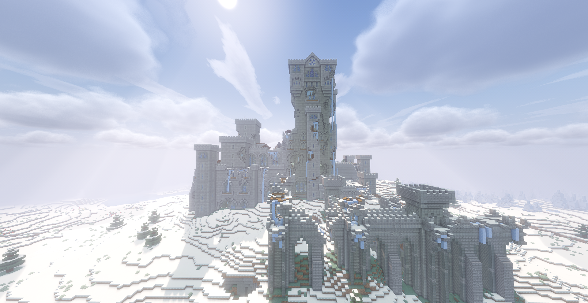
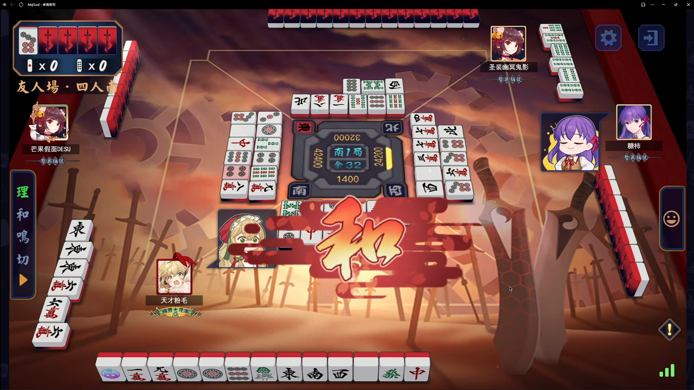

探索并分享《我的世界》中各种独特结构的坐标，让冒险更加便捷！
探索我们提供的各种功能

探索并查看游戏中各种独特结构的精确坐标，包括数据包结构和自然奇观等。

浏览玩家分享的游戏心得、攻略和精彩瞬间，加入社区讨论。
使用三维可视化方式查看所有坐标点的空间分布，支持旋转缩放。
3D可视化展示所有服务器的坐标点分布
我们是一群热爱《我的世界》的玩家，致力于收集和分享游戏中各种独特结构的坐标，让大家的游戏体验更加丰富多彩。
收集各种稀有和独特的结构坐标，包括遗迹、自然奇观和特殊地点。
开放社区，所有玩家都可以贡献自己发现的坐标，分享游戏中的精彩发现。
除了坐标库，还提供各种游戏攻略和指南，帮助更好地探索《我的世界》。
虚线表示从(0,0)出发的最短路径顺序